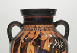

Hesiod's Theogony: Genealogy of the Gods
To begin, I would like to say something about what type of poetry the Theogony is. Hesiod, the Boeotian poet of the Theogony, was regarded by the Greeks as one of the oldest poets. In many cases, Hesiod was thought by the Greeks to have composed the Theogony even before Homer composed the famous Iliad and Odyssey (accounts of the Trojan War and the wanderings of Odysseus), sometime in the late eighth or early seventh century B.C.E.. Such relative dating is fraught with difficulty in the Archaic period, and even the ancient Greek historians themselves who commented upon the dating of Hesiod and Homer, had very little evidence, writing as they did many centuries after the poems were composed. But, regardless of the difficulty of saying anything which is certain regarding dating, it is nonetheless interesting to enquire WHY the ancient Greeks thought it right to place Hesiod before Homer and regard the Theogony as one of the first Greek poems. Part of the answer at least must lie in the fact that the Theogony is of a genre that explains origins and attempts to codify the Olympian system of gods and goddesses. In Homer’s Iliad and Odyssey, as we will see later in this course, the Olympian gods and goddesses act out their lives in the world of humans. It is only natural, in one sense, that what explains their origins, the Theogony, is understood as being prior, whether this was the case or not. Homer and other poets do give us some information about the births of gods and goddesses. However, the version which we find in Hesiod’s Theogony is the first surviving attempt to lay out the system of gods and the origins of the universe itself; for this reason, among others, it became the classic Greek version, and one which the Greeks and Romans looked back to frequently throughout their history (it must be kept in mind, however, that there were various versions of the birth of the gods and the creation of the world, and we will encounter some such variant versions in this course).
What is theogonic poetry? In one sense, the Theogony is no different poetically than the Iliad and the Odyssey, what is often referred to as heroic poetry. Like the Iliad and Odyssey, the Theogony is composed in hexameter verse, and is the product of a long oral tradition in which stories were told and retold in performance. What is different, of course, is the subject matter; theogonic poetry has been defined by M. L. West as poetry describing, ‘the origin of the world and the gods, and the events which led to the establishment of the present order.’ There are, as one might expect, many parallels for Hesiod’s description of the origins of the world, one of which is the Hebrew tradition recounted in the first chapters of Genesis which are so familiar to the Western world. This, however, is only the tip of the iceberg. We know, for example, of a poem from ancient Babylon, called the Enuma Elish which is an epic of creation. This is a text that was recited every year in Babylon at the New Year celebrations. The poem, similar to Hesiod’s Theogony, consisted of over 1000 verses. It tells how, in the beginning, before heaven or earth existed, Apsu and Tiamat mingled their water in a single body. Apsu represents male water and Tiamat female water. From this beginning gods come into being. Although there are no exact parallels between this Babylonian text and Hesiod, the underlying principle is similar (note that both poems contain an opposition between male and female); and similar traditions are known in ancient Egyptian, Persian, Indian, Druid, Germanic, British, Norse, Finnish, Estonian, Japanese, and Polynesian cultures, to name a few. I will come back to this and other parallels later, but first, let’s look more closely at Hesiod, who interests us directly today.
Hesiod begins his poem with an invocation of the Muses to inspire his poetry. He sets the stage and tells us that he is singing on Mt. Helicon, in Boeotia. Lines 1-115 are taken up by this hymn to and invocation of the Muses. The Muses, of which there were canonically nine, were the inspiration of any artistic endeavour and are frequently invoked in poetry. In myth, they are the children of Zeus and Mnemosyne (memory personified). They are the following: Calliope - Epic Poetry, Clio - History/Lyre Playing, Euterpe - Lyric poetry/Flute Playing, Melpomene - Tragedy/Lyre Playing, Terpsichore - Choral Dancing/Flute Playing, Erato - Love Poetry, Polyhymnia - Sacred Music/Dancing, Urania – Astronomy, Thalia – Comedy.
From lines 116-122 we are told that in the beginning there was Chaos from which we presume that Earth (Gaia), Tartaros, and Love (Eros) emerge. Erebos (dark gloom of the underworld) and Night also come about from Chaos. These characters represent basic aspects of our world; Chaos, a chasm or a ‘yawning void’ is first. It is difficult to know exactly what Chaos is meant to represent in Hesiod, and whether he came into being or already was. But regardless, it is after Chaos that everything comes about (Ovid later at the very beginning of his Metamorphoses considers Chaos to be the primal source of everything, a large mass of elements from which the world was fashioned). Note also that Eros (erotic love personified) is a primal element of the cosmos, whose creation is brought about in part through procreation.
From 123-153 we hear of the second generation of gods, born to Chaos, Gaia and others. Erebos (darkness) and Nyx (night) give birth to Ether (air) and Hemera (day). But most important for the development of the gods are the children of Gaia (earth). She first gives birth asexually to Ouranos (sky or heavens), to the Mountains and to Pontos (the sea). Then, with her son Ouranos, she gives birth to three races, the Titans, the Cyclopes and the Hundred-Handers. The most important of these is the Titans, who, Hesiod tells us, hate their father from the time they are born, because he keeps them back in Gaia’s womb and does not let them out (presumably the idea is that Ouranos maintains a sexual grasp upon Gaia, thereby trapping them in the womb). The Titans are Ocean, Koios, Kreios, Hyperion, Iapetos, Thea, Rhea, Themis and Mnemosyne (memory), Phoebe, Tethys, and finally and most importantly Kronos, who hates his father particularly. Of these, Kronos and Rhea become the parents of Zeus, the eventual ruler of the gods. One will again note how the Titans themselves, like their parents, represent basic aspects of the world: Ocean is contained with the water, Hyperion the sun, while Rhea and Kronos are linked to earth and sky respectively.
From lines 155-210 we hear of the first Succession Myth; angry at being kept inside the womb, Kronos devises a plan with Gaia to lop off the genitals of Ouranos with a sickle (an unpleasant morning, unbdoubtedly!). This is done, and the genitals drop into the ocean. One can think here about the union of Gaia (earth) and Ouranos (sky) and their separation as representative of the division of earth and sky. Moreover, there is from the very beginning of Hesiod’s account of the creation of the world an opposition between female and male (a point which has been the focus of many structuralist studies of the poem – in other words, behind the individual characters, one finds in the Theogony the frequent opposition of the binary opposites male and female). It is also from the genitals of Ouranos that Aphrodite is born: she emerges from the foam (in Greek 'aphros' that arises out of the sea where the genitals fall). The drops of blood on the way down also give birth to the Furies, the Giants and the Tree Nymphs.
Moving on in the Theogony, from lines 211-336 we are told of the second and third generations of gods, including the children of Nyx and Pontos, and the grandchildren of Pontos. We are not going to concentrate on these, but rather the grandchildren of Ouranos, born of the Titans. The birth of the grandchildren of Ouranos and the Succession Myths of the next generation are narrated across the greatest part of the poem, lines 337-885. Most importantly here, we are told of the children of Ouranos, Kronos and Rhea (as above, Rhea is Kronos’ sister; such incest is common in relationships between the gods), who will give birth to Zeus and the Olympian generation.
From lines 453-506, we are told of the birth of Zeus and the other Olympians. This involves the second Succession Myth embedded in the poem. The children of Kronos take over his power. Kronos’ wife and children play a trick upon him; he has been swallowing up his children so that they will not overpower him, but before Rhea’s final son Zeus is born, she prays to her parents that he will not be eaten. Zeus is concealed in Crete, and Kronos in place of him swallows a stone. By Gaia’s cunning and Zeus’ strength, Kronos is made to regurgitate his children. Zeus the rules with his thunderbolt. Note that, as in the previous Succession Myth, a son overthrows his father with the help of his mother.
Perhaps the closest parallels for the story of creation recounted in the Theogony come from the Hurrian culture of south-east Asia Minor. Hurrian culture was at its peak in the 16th and 15th centuries B.C.E., after which they were assimilated into the more dominant Hittite culture of Anatolia. When this happened, the Hittite culture adopted many of the Hurrian myths, among which were explanations of the beginning of the world. The story of creation and succession which we find in Hesiod’s Theogony bears a close similarity to the succession myth of the Hurrian peoples. What remains of one Hurrian text tells us that a god named Alalu was the king of heaven, before he was defeated in battle by Anu (the Babylonian sky-god). Anu then reigned for nine years, after which he fought a god named Kumarbi. Realizing that he was going to be defeated, Anu fled up to heaven, but Kumarbi caught up with him, bit off his genitals and swallowed them. Kumarbi has actually swallowed three powerful gods that resided in the genitals, and when Anu tells him this, he tried to spit out what he could. His regurgitation gave birth to two gods, but the weather god remained inside of him. Kumarbi ate something (which in the fragmentary text appears to be a stone), in an attempt to destroy the weather god inside. After much groaning, the weather-god emerged from his stomach. The weather god then did battle with several other deities, and, although much of the final parts of the text are not preserved, we know that he was victorious.
Let me point out some of the specific similarities between the Hurrian and Greek texts. First, the name of the second Hurrian god I mentioned named Anu, means ‘Sky’, corresponding to Ouranos, whose name in Greek also means ‘Sky’. Also, similar to Ouranos in Hesiod, Anu is castrated, and gods are born from his members. Kumarbi then corresponds to Kronos, who castrates his father and swallows both his son, and a stone. Then, the unnamed weather god in the Hurrian text corresponds directly to Zeus, who is also a weather god (consider for example his connection with the thunderbolt). Also, like Zeus, we know that he does battle with other gods after he has emerged from his father’s belly, against whom he is victorious in order to become the chief of the gods.
Moving on in the Theogony, from 507-616 we hear of the disobedience of Prometheus and how he gives fire to man; following which Zeus has Hephaestus make woman, made of clay. We will come back to this story more later, when we talk about the origin of humanity. For now, we continue in the Theogony with a battle in which Zeus, having defeated his father Kronos, must now do battle against the other Titans. This is narrated across lines 617-731. Zeus is victorious in this battle and thereby makes firmer his position as the ruler of the gods. From lines 732-819 in the poem there is a description of Tartarus, in which the Titans are confined, before in lines 820-85 we encounter the third and final Succession Myth in the poem. Typhoeus, the youngest child of Gaia, born when Zeus defeated the Titans, was a great monster with one hundred snake heads shooting out from his shoulder; we are told that he would have defeated Zeus, had Zeus not been keeping a close eye and destroyed him with a thunderbolt. After a great battle, he gains his supremacy without further challenge. Only now does the cycle of succession, in which son defeats father, come to an end. This is made clear in lines 886-929, when we hear of the wives of Zeus, amongst which is Metis (wisdom personified). When Metis is pregnant he swallows her and eventually gives birth to his daughter Athena from his head. (See image 1)Athena, a female but martial goddess, could pose a threat to her father, but she is instead born from his head and becomes an ally.
The Olympian order is now established, within which the sons and daughters of Kronos and Rhea rule along with their children. In the previous generation are Hestia, Demeter, Hera, Poseidonand Zeus. Their children include Hephaistos, aparthenogenetic son of Hera, Ares, who was born to Zeus and Hera, Apollo and Artemis who were born to Zeus and Leto, Athena who was born from Zeus' head, Hermes who was born of Zeus and Maia, and Aphrodite, who is born of the genitals of Ouranos (in Homer she is the daughter of Zeus and Dione). Hades can be separated from the Olympian pantheon because of his connections with the underworld.
The Theogony then closes with accounts of the children of the other Olympians. 969-1018 in particular recounts the unions of goddesses with mortal men, while 1019 seems to begin a new poem which told of the unions of gods with mortal women.
{kind=link}
Turning to the interpretation of the Theogony, it is notable (as mentioned above) that there is a frequent opposition between male and female in the poem. A development can in fact be discerned through the poem. The modern scholar Apostolos Athanassakis gives the following helpful account: ‘For most of the poem it is the mother who matters. The male partner is much less prominent or altogether obscure. Given the fiercely patriarchal character of Hesiod’s own society, this is a remarkable departure from his familiar world and an equally remarkable testimony to the tenacity of the substructure of the mythological pattern. It is after the defeat of Typhoeus when Zeus is left as supreme master of the world, that in the sexual unions the male god, Zeus in this case, is more than an instrument of procreation. Since Zeus, the male sky-god, is ultimately descended from Mother Earth, we have here the record of an evolutionary process that takes us from the physical to the non-physical , and from feminine dominance to male dominance. The male dominance Hesiod equates with law and order. Indeed, Zeus’s first children by his second wife, Thetis, are the Seasons, who stand for regularity: Eunomia (Law), Dike (Justice), and Eirene (Peace)’
If the movement as described by Athanassakis above is from matriarchal to patriarchal power, one might at the same time note that Zeus in his final form incorporates (quite literally) qualities of the matriarchal line of succession. It is through the cleverness and advice of women that the male gods are throughout the Theogony able to defeat their fathers. Zeus ultimately swallows his wife Metis (personified wisdom), thereby adopting a feminine quality which is an important element of his rule. Zeus is a god who maintains his position by force, but also through cleverness and good council which are portrayed as female characteristics throughout the Succession Myths.